델타룬 8주년 기념 인터뷰1부 - Dtkrpatchteam 인터뷰
델타룬 챕터 3~5 한글패치를 제작하신 분들을 모셨습니다!
인터뷰에 참여해주신 분들께 감사를 표합니다!

Q: 크레딧을 보니까 다들 적힌 것 외에도 이것저것 멀티로 돕거나 숨겨진 역할을 하신 분들이 많더라고요. 혹시 어떻게 팀에 합류하게 되셨는지, 역할이 바뀌게 된 계기가 있으신가요?
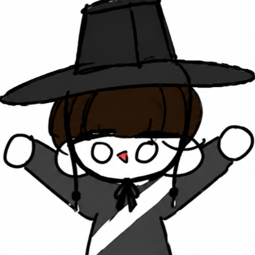
진윤: 사실 챕터 3, 4 한패 출시 당일까지는 한패팀이 아니었습니다. 한글패치가 나왔길래 신나서 하려는데, 프로그램을 깔고 어쩌고저쩌고... 할 정도로 패치 과정이 복잡하더라고요.
문득 어린 날 초등학생이었던 제가 떠올랐습니다. 한글패치를 깔아보겠다고 아버지의 손까지 빌렸으나 결국 실패해 하루를 눈물로 날려먹었던 기억... 화면에 뜬 Flirt라는 단어의 의미조차 몰라, 옆에 네이버 사전을 켜놓고 서럽게 자판을 두드리던 그 시절의 제가요 ㅋㅋㅋ
언델타룬은 어린 유저들도 아직 많은데 저 같은 피해자가 또 나오면 안 되잖아요? 그래서 딸깍 한 번에 끝나는 프로그램을 직접 만들어 커뮤니티에 올렸죠. 그런데 그 글 댓글로 한패 팀에서 영입 제안을 주시더라고요 ㅋㅋㅋ 그렇게 스카우트되어 합류하게 됐습니다. 당시 절 영입해 주신 전 총괄님께 그 부분은 지금도 정말 감사드리고, 덕분에 값진 경험을 하고 있습니다 ㅎㅎ
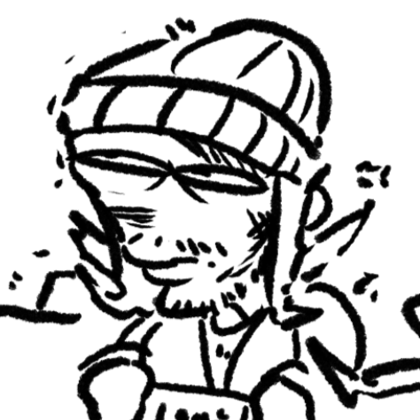
외정대: 저는 굉장히 이상한 역할 변경이긴 합니다! 성우에서 갑자기 번역이랑 게임 스프라이트를 만들고 있다니...
성우로서 제의를 받은 건 '사계절 먼지'씨가 "델타룬 새 챕터의 쓸 목소리가 필요해!" 라면서 개인 메시지 를 보냈었거든요. 스프라이트 제작, 번역으로 넘어오게 된 계기 자체가 '성우로서 팀에 남아있기는 하지만, 그림도 그릴 줄 알고, 영어도 어느 정도 할 수 있으니깐, 어느 정도 도움이 되지 않을까?' 싶어서 지금 총괄인 먼지씨에게 제의했던 게 너무 잘 받아들여져서 이렇게 7챕터까지 귀속저주 번역가가 되고 말았습니다 🫠
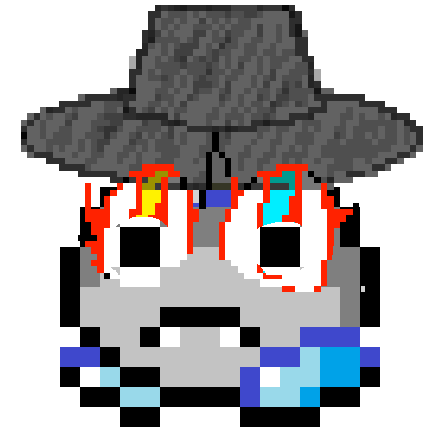
세슘: 한글번역 막 시작할 때, 캐릭터마다의 말투의 일관성을 위해서 각 캐릭터마다 번역 담당자를 뽑았습니다. 제가 핑크를 하고 싶었는데, 진윤님도 핑크를 하고 싶어하셔서 네이버 사다리타기를 했거든요. 근데 제가 졌습니다. 그러고 다음으로 아쿠아를 골랐는데 여기서도 진윤님한테 사다리타기로 패배했어요. 저는 사다리타기에 재능이 없는 것 같습니다.
다행히 진윤님께서 너그럽게 아쿠아를 양보해주셔서 제가 우으으으으 나도 블루할래를 할 수 있었습니다.

Q: 방금 코드 얘기가 나와서 말인데, 번역과 기술을 총괄하시면서 델타룬의 내부 구조를 샅샅이 뜯어보셨잖아요. 작업하시면서 토비폭스에게 화가 났던(?) 부분이라던가, 머리를 쥐어뜯게 만들었던 한글패치 버그가 있었다면 썰 좀 풀어주실 수 있나요?
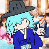
사계절먼지: 개인적인 사항이니만큼 이 사항을 말하기 전에, 저는 토비 폭스의 코드가 무조건 최악이라고 생각하지 않으며, 오히려 저의 코딩 방식이 여러모로 토비보다 뒤떨어지거나 토비가 의외로 잘 코딩한 부분이 많다고도 단언할 수 있습니다.
그럼에도 일단 조금 비평을 하자면, 챕터 3 시절의 코드를 꼽을 수 있겠습니다. 제일 악명높았던 게 테나 게임 쇼 부분에서 테나가 게임 더 하자고 징징대는 부분에서 게임이 자주 튕겼던 건데, 원래 스프라이트가 들어가야 했던 코드 부분에 UTMT의 코드 압축성으로 인해 빌드 자체가 달라지면 스프라이트 참조 부분마저 달라지고, 없는 스프라이트를 불러와서 튕기는 구조였습니다. 매 빌드에서 챕3이 업데이트되면 이걸 하나하나 다 고쳐야 했기에... 체감상 난이도 GOAT는 챕3일 거 같습니다.
그리고 조금 내적으로 복잡한 이야기이긴 한데, 플라워리와 블루의 첫등장을 제외한 모든 여섯 꽃들의 문장은 내부적으로 ~1 코드들을 번역한 후 그만큼 탭을 띄워버려서 포맷팅을 하는, 저희 입장에선 정말 당혹스러운 코드 구조가 있습니다. 토비였는지 다른 팀원이었는지 도대체 왜 어째서 이렇게 만든 것이었는지 의심하게 되죠. 모든 꽃들의 문장들이 전부 그런 식으로 포맷팅되어 있어서 쉽게 바꾸지도 못하고요.
그래서 보석님에게 지금 생각해도 죄송했던 요청을 하나 드렸는데, 현재 델타돋움체라고 불리는 '델타룬 한글패치 전용 폰트'를 만들어달라고 요청을 드렸습니다! 보석님은 상남자답게 흔쾌히 받아들여주셨고, 그렇게 전용 폰트가 만들어지면서 ~1 코드의 문제가 완벽히 해결되었던 적이 있었습니다. 다소 의역하자면 제가 보석님에게 갑질했습니다 껄껄.
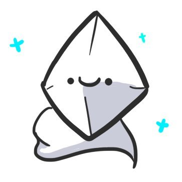
보석: 가장 큰 이유는 제가 3+4를 할 때 폰트가 너무 개구렸던 게 큽니다. 해보셨으면 알겠지만, 쫌 많이~ 별로였습니다. 전문 용어로는 밤티 같았죠. 그래서 한패팀에 들어와서 가장 먼저 한 것이 예언 폰트(델타글라스체)를 새로 만드는 거였죠.
이후에는 메인 폰트(델타돋움체)는 일곱 꽃이 (지루하고 현학적인 이유)로 제대로 출력이 안 되는 오류가 있었고, "안 되는 김에 이쁘지도 않은데!" 라는 마음으로 새롭게 제작했습니다. 검수가 늦어지면 안 되어서 일주일도 안 되게 급하게 만든 것 치곤 만족스러운 결과물입니다.
+ 소소하지만 새 폰트는 받침 ㄱ이 조금 다르게 생겼습니다. 그래서 저희는 그걸로 AI 한패를 구분하고 있어서, 소신 발언하자면! AI 한패에는 안 써주셨으면 하는 (신비로운) 바람이 있습니다. 물론 쓰지 말라는 아니고요, 그냥 그렇다는 거죠.
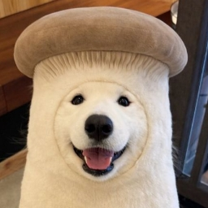
동명: 음, 이런 말해도 될진 모르겠지만 한패팀이 작업 막바지에 들어갈 때 '자동 줄바꿈'을 만들었습니다. 저는 기술자가 아니라서 잘 모르지만... ㅋㅋㅋㅋㅋㅋ 대단하단거는 한눈에 알 수 있었죠. 스레드로 다 사항을 나누시면서 회의나 토론같은걸 하더라고요. 작업은 새벽 4시?까지 했던 적도 종종 있어요.
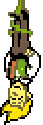
Q: 제인님과 동명님, 두 분이 보이스 디렉팅으로 합을 맞추셨다고 들었습니다. 제일 신경 쓰셨던 포인트가 무엇이었나요?
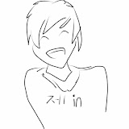
제인: 저는 챕터 5 플라워리 음성 클립을 담당하신 동명님 연기 감독을 했습니다. 영문 음성을 기준으로 영문 감성을 최대한 받으면서 한국어로도 자연스러움을 표현하는 걸 목표로 동명님께 연기지도를 했죠. 제 기준에선 '플라워리!' 랑 '자로나!' 였던 것 같네요. 까다로웠던 이유는 일단 가장 자주 쓰이는 대사기도 하고, 최종 보스전에서도 계속 들리는 대사였기도 해서 짧은 대사지만 가장 많은 신경을 집중해야 했던 대사 같았습니다.
동명: 디스코드 통화로 디렉팅을 받으며 녹음했는데, "눤 영웅위야~" 하고 대놓고 비꼬는 톤으로 연기해달라는 요청을 받았을 때는 조금 당황하기도 했습니다 ㅋㅋㅋ 더빙 대사들도 약 100개인 만큼 전후 상황을 정확히는 모르다 보니 원작의 토비 폭스 님 목소리가 화난 건지 기쁜 건지 헷갈릴 때도 있었지만, 최대한 원본의 느낌을 살리려고 노력했습니다.
외정대: 성우 얘기 하니까 생각나는데, 저도 처음엔 테나를 맡을 줄 알았어요
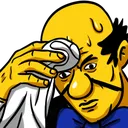
수락하자마자 샘플 영상을 보내셨거든요!근데 저는 오히려 잭켄슈타인을 맡은 게 더 다행이라고 생각합니다. '테나와 잭켄슈타인 둘 중에 어떤 캐릭터가 내 목소리에 어울릴까?'를 생각해보면 잭켄이 어울린다! 생각하거든요! 그리고 주연급의 티비 진행자인 테나를 맡기에는 긴장되기도 하고요...! 아, 그리고 이때 챕터 4를 스포 당했습니다. 그 당시에는 군입대를 서서히 기다리는 마지막 불꽃의 시기였습니다...!
Q: 텍스트 작업이나 스프라이트 그래픽 작업하시면서 공들였던 부분도 많을 것 같은데요.
제인: 머리를 싸맨 건 아니지만 팀원들끼리 의견이 갈려 각 대사들을 하나하나 투표까지 해야 했던 부분이 있었는데, 플라워리 음성 클립 대사들 번역을 정하는데 가장 많이 고생하였고, 그 대사들 중 glue!를 민트! 로 할지 아니면 풀! 로 정해야 하는지가 가장 고생하였던 거 같았습니다.
세슘: 사실 번역에 객관적으로 옳은 정답 같은 것이 없는 경우도 많다고 생각합니다. 그래서 어떻게 번역할지 팀 내에서도 의견이 갈리는 사안이 항상 있었고, 몇몇 사안들은 각자의 주장에 대한 근거를 모아 서로 이야기해본 후 팀원들끼리의 투표를 통해 결정하기도 했습니다.
까다롭다기보단 재미있었던 기억은, 노엘 대사 중에 매우 긴 서브텍스트 (사진첨부) 가 하나 있고 (이 경우에는 그냥 대사 자체가 재미있어서 기억에 남는 것 같습니다),
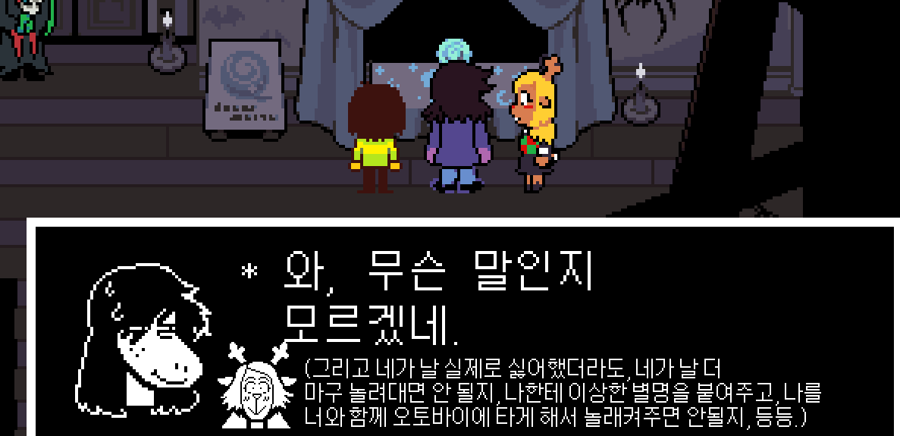
아쿠아 대사 중 "I want to smile you!" 처럼 문법을 일부 파괴한 문장을 "아스고어를 웃을 수 있는~~" 같은 식으로 번역했던 것이 재밌었던 것 같네요!
진윤: 가장 기억에 남는 건 역시 핑크의 정신과 육체가 분리돼서 싸우는 미연시 파트가 압권이었어요. 육체는 "네 향기에 이끌려 날아온?" 하고 플러팅을 하는데, 정신은 "네가 저지른 잘못의 끔찍한 대가!" 하면서 저주를 퍼붓거든요.
여기서 플레이어는 두 문장 모두에 들어맞는 중의적인 답변(예: "벌")을 골라야 하는데, 이걸 짧은 제한 시간 안에 직관적으로 읽히게 하면서 글자 수 제한까지 맞춰야 해서 머리가 터지는 줄 알았습니다. 도저히 모르겠을 땐 팀원분들의 도움을 좀 받기도 했어요.
보석: 번역뿐만 아니라 스프라이트 그래픽 작업 쪽도 꽤나 공을 들였습니다. 일단 챕터 5 이전에 제가 또 이전 챕터에 아쉬웠던 것들이 많다고 생각해서 대대적인 수정 작업을 거쳤었습니다. 이거 3개가 이제 쫌 크게 바뀐 거 같아서 가져와 봤어요.
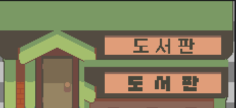
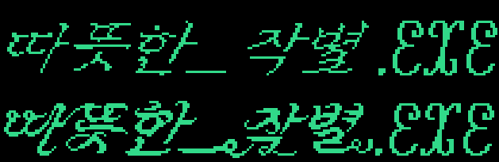
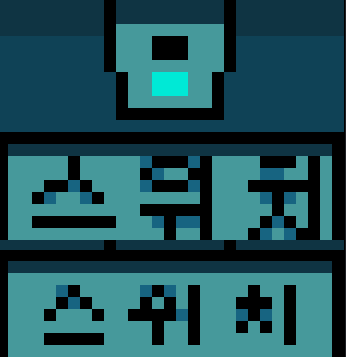
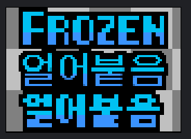
이런 상태 메시지도 이번에 전부 바꿨습니다. 전체적으로 원본에 스타일을 유지하고 싶었습니다. 근데 사람들이 잘 모르긴 하더라고요, 그게 쫌 아쉽지만 그만큼 자연스럽다는 거니까 좋게 받아들이고 있습니다.
이것도 눈치채신 분이 있을지 모르겠지만... 역시 이번에 한국어로 번역했습니다. 다만 이게 픽셀이 너무 쪼끄매서 반대했었는데, 어떻게 우겨넣으니까 되긴 하더라고요. 근데 또 한국어인줄 몰랐다...라는 반응도 있어서 이건 쫌 아픈 손가락입니다.
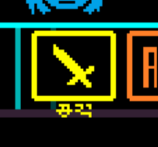
이만 각설하고 챕터 5에서 작업한 것을 보여드리자면: 첫째로 [출구]입니다! 이거 진짜 잘 만들었다고 생각하는데... 제가 사실 한패 출시 후에 거의 모든 방송인들 플레이를 봤거든요. 근데 딱 한 분만 "와 출구다~" 정도로 반응해주셔서 많이 슬펐습니다. 원본에 휘황찬란한 감성은 그대로 가져와서 꽤나 마음에 듭니다. 그리고 팀원 분들이 계~속 (원치않는) 피드백을 주신 덕이라고도 생각하고요.

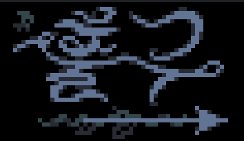
 피드백.webp)
원래는 이랬거든요, 또 지금보니까 수정되길 잘한 거 같네요. 저때 약간 삔또가 상해서? 모두가 자고 있을 야심한 새벽에 분담받은 모든 스프라이트를 전부 처리했었습니다. 그때 작업한 게 바로 이 [노엘을 환영합니다]!!
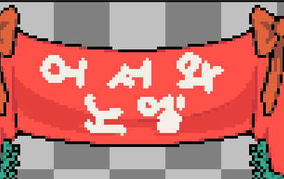
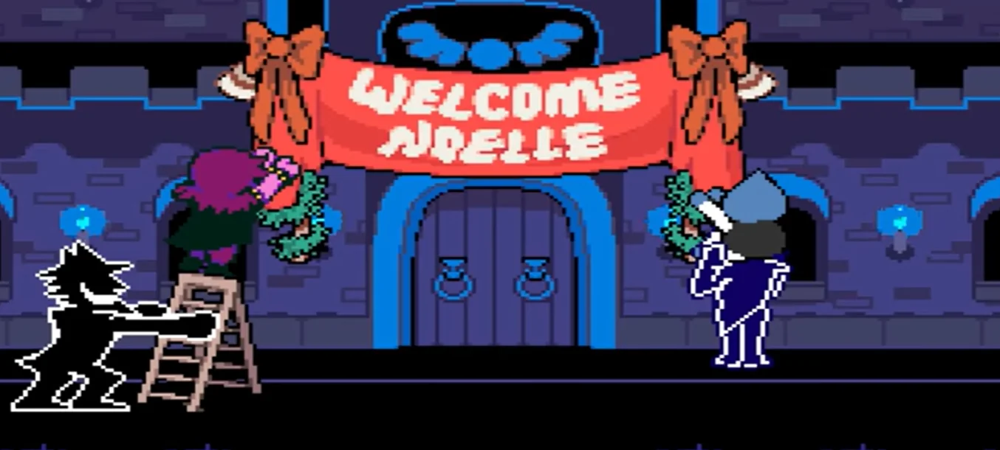
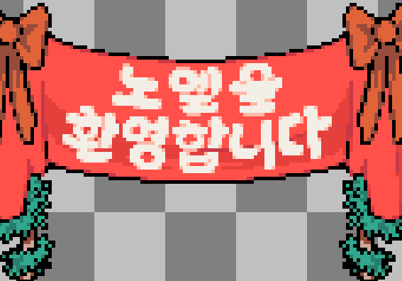
이게 진짜 되는 거 맞나? 싶었는데 되더라고요. 저 출근의 후유증 때문에 더욱 힘을 준 거 같습니다. 이게 보면, 약간 뭐랄까요, 생활의 지혜? 같은 게 아주 찐하게 농축되어 있다고 해도 과언은 맞는데, 아무튼 그렇거든요?
사실 저기 유치원에 다니는 김소율 어린이를 데려와도 비슷하긴 할 거 같긴 합니다만, 약간 설명하기 힘든 디테일이 쫌 있습니다. 이런 끔이나 벌 같은 것들 말이죠? 실제로는 이 글자가 이렇게 생기지 않았잖아요, 약간 픽셀 환경에 맞춰서 환각을 보여주는 거죠.
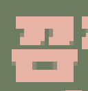
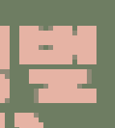
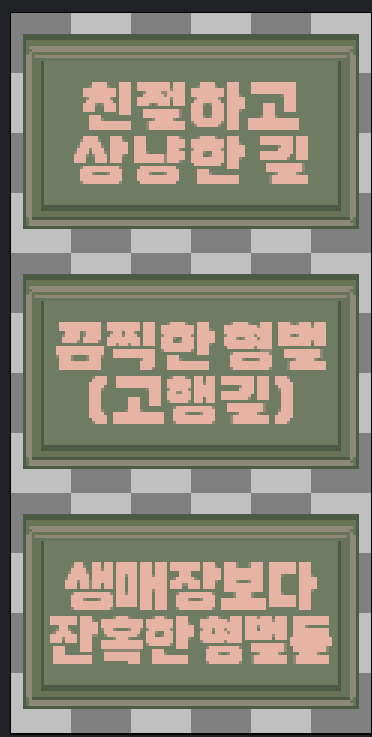
한글이 악명이 높잖아요. 예컨대 '를' 같은 거 말이죠. 세로획이 너무 많아요! 그래서 이렇게 두꺼운 글자들은 저렇게 자연스럽게 뭉개는 걸 잘해야 하더라고요.
이건 그리고 진짜 마지막으로 제 작품이긴 한데, 꺼내도 되나 싶긴 합니다. 결의지 다음으로 사실상 커뮤니티에서는 볼드모트화가 된 것이지만... 이게 진짜 약간 마음이 아픕니다. 옛날 카세트 테이프의 투박한 한국어 UI를 구현하고 싶어서 만들어본 것인데 아실지 모르겠지만 당일날 다구리 맞고 바로 롤백됐습니다. 저도 좋다고는 생각했지만, 민중의 지팡이가 저를 당장이라도 눈무덤시키려 했기 때문에 제가 자진해서 그냥 롤백해달라고 했었습니다.
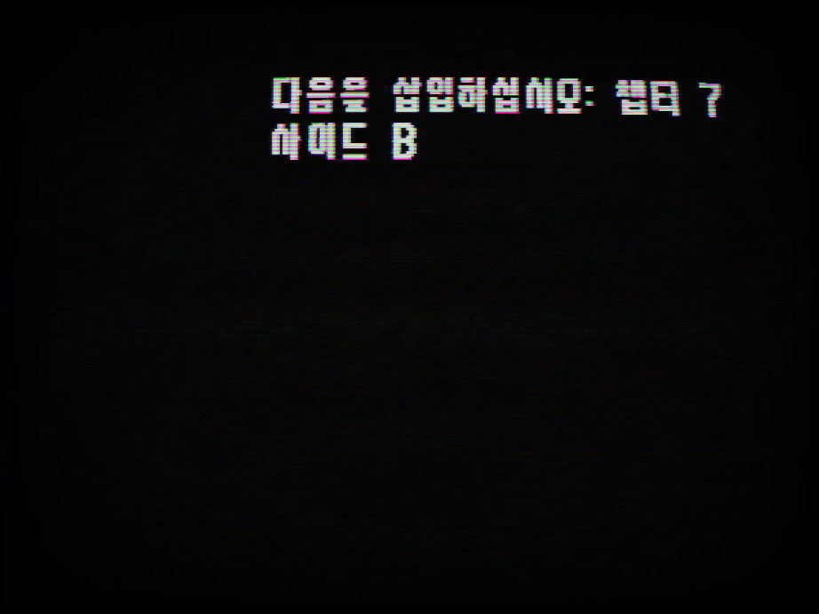
Q: 정말 대단한 정성이네요. 지금까지 참여하시면서 가장 재밌었거나 황당했던 에피소드가 있었다면 하나씩 들려주세요!
진윤: 악플이나 질타라기보다는, 배포 직후에 "이거 왜 안 돼요?", "실행이 안 돼요!", "창이 안열려요!!" 같은 문의와 버그 제보가 1초 단위로 쏟아질 때의 그 숨 막히는 압박감이 제일 아찔했던 기억은 납니다. 실시간으로 콜센터 직원이 된 기분이었거든요.
이런 배포 직후의 해프닝 외에 또 기억에 남는 작업이 있다면, 챕터 3 인트로 영상 한글화 비하인드입니다. 당시에 공식 일본어판도 영상이 번역되어 있었기 때문에, 한국어 패치도 인트로 영상을 제대로 살려야 완성도가 높아질 거라 생각해서 계속 방법을 찾고 있었어요. 우연히 알고리즘에 sertune 님의 작업물이 떴는데 퀄리티가 너무 충격적이었어요. "아, 글자만 지워진 소스라도 받아서 내가 작업해봐야겠다"는 생각에 다짜고짜 DM을 보냈습니다.
그런데 파일만 주시는 수준이 아니라, 무려 직접 만들어주시겠다고 하시는 거예요...! 당시 챕터 3~4 총괄님께서 "만들어오면 무조건 바로 넣어줄게!"라고 하셨던 게 아니었거든요. "음... 퀄리티가 괜찮으면 넣을 수도 있다" 정도로 말씀하셨던 터라, 작업하는 내내 "이러다 퇴짜 맞으면 어쩌지? 진짜 인게임에 들어갈 수 있을까...? 못넣으면 sertune님한테 너무 죄송한데..." 하면서 속으로 벌벌 떨며 작업했던 기억이 납니다 ㅋㅋㅋ
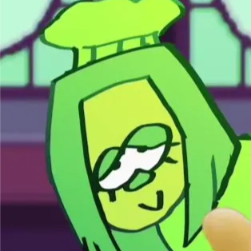
SerTune9: 모든 건 제가 러시아 팀(LazyDesman)의 테나 더빙에 참여하면서 시작됐어요. 녹음 후에 평은 좋았지만, 그 팀이 유명 성우를 섭외하면서 제 더빙은 필요 없게 됐죠. 전 '이걸 썩힐 순 없지' 하는 마음에 챕터 3 인트로 영상 그래픽을 수정하고 제 목소리를 입힌 영상을 직접 만들었어요.
놀랍게도 그 영상이 인기를 끌었고, 결국 한국어 패치 팀의 진윤 님이 연락을 주셨죠. 한국어 더빙판으로도 똑같은 영상을 만들어 줄 수 있냐고요. 전 이미 작업해 둔 소스가 있었기에 텍스트와 애니메이션을 맞추고, 한국어판 테나 목소리에 효과음을 넣는 건 식은 죽 먹기였습니다. 크게 어려운 일은 아니었지만 제 작업이 도움이 된 것 같아 기쁘네요.
솔직히 두 팀과 거창하게 '작업했다'기보단, 개인 단위의 소통에 가까웠어요. 진윤 님이랑 대화하는 건 정말 재밌었습니다 XD 한국 팀에 도움을 줄 수 있어서 즐거웠어요 🙂
외정대: 제일 기억에 남는 건 선임한테 델타룬 번역팀이라는 걸 들킨 게 좀 기억에 남긴 합니다.
언제 한번 싸지방에서 그 선임과 나란히 앉게 된 적 있었는데 계속 옆에서 힐끔힐끔 보시더니 뭐하시는거냐고 여쭤보더군요. 그 당시 너무 당황해서 그런지 선임이 게임에 무지할 거라 생각한 건지 "아 게임 번역하고 있습니다!" 라고 돌직구를 박아버리는 바람에... 정확히 기억하고 있습니다. 자기 휴가때 맞춰서 번역 내줄수 있냐고... 물론 어떻게 일정이 맞았는지 휴가때 재밌게 하셨다고 하십니다. (저도 이게 왜 됐는지 모르겠습니다!)
전 군대에서 델타룬 팬인 선임을 만날 줄 몰랐다구요!
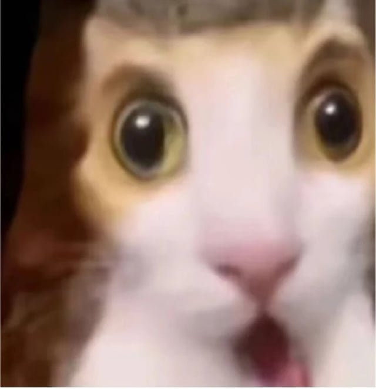
Q: 마지막으로 언더테일/델타룬을 통틀어 가장 애정하는 캐릭터 딱 하나와 함께, 남기고 싶은 말씀 자유롭게 부탁드립니다!
진윤: 전 램 좋아합니다.
+ 하고 싶은 말 대신에 작업 중 채팅 내역 하나 올립니다.
.png)
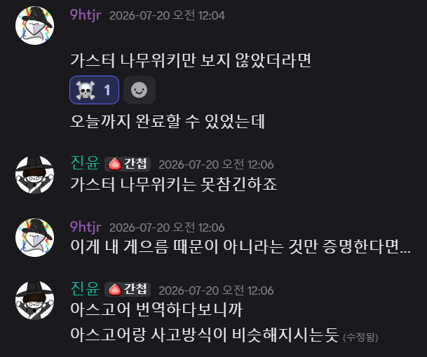
SerTune9: 제 프사를 보세요 xd 그린은 너무 친절하고 사랑스러워요. 그리고 제가 그 녀석한테 돈을 빚졌거든요.
동명: 좋아하는 캐릭터 역시 메타톤이죠. 서사의 훌륭함, 브금의 훌륭함, 개성의 훌륭함 정말이지 완벽한 캐릭터라 생각합니다. 마지막으로 제 목소리 또는 한글패치를 사랑해주는 유저분들에게 감사드리고, 제 보이스 커미션도 대격변이 있을 예정이니 제발 부디 한번씩만 와주시면 좋겠습니다 ㅜㅜ 성공하고 시퍼여.
외정대: 오리지널ㅤㅤㅤㅤㅤㅤ스타워커.
비록 지금 군대에서 협소하게 참여하고 참여하고 있지만, 다음 6/7챕터에선 더 열정적으로 참여하고 싶습니다! 그리고 가스터해적설 지지합니다.
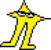
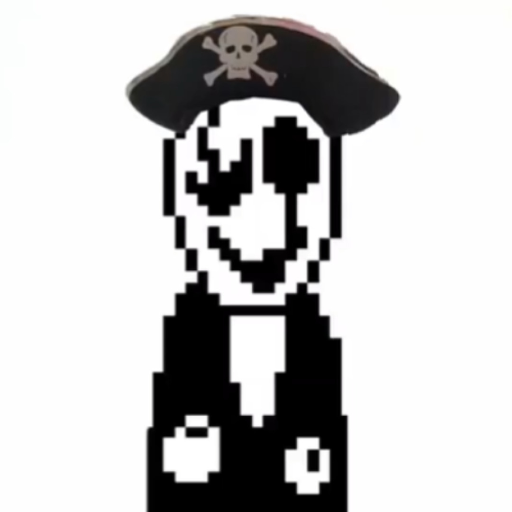
제인: 언더테일에선 아스리엘이고, 델타룬은 스팸톤이라고 생각하는데요. 스팸톤은 자유를 위해 노력하는 모습이 청년들이 경제적, 심리적 안정감을 위해 성취하려 하는 목표가 어느 정도 제가 인생을 살아가는 방식과 비슷해 와닿은 거 같다고 생각해서 그렇습니다.
패치팀에서 느낀 소감은 아무리 비공식이지만 공식이라고 할 정도로 체계화돼있고, 팀장님이나 진윤님이 버그 패치에 대해 바로 패치를 적용시켜 새 패치를 적용하는 것에 대해 전문성을 느꼈습니다.
세슘: Forgotten Man 혹은 잊힌 남자. 좋아합니다 (플라토닉하게).
그리고 홍보에 가까운데요, 누군가가 만든 DELTARUNE : RIBBIT이라는 델타룬의 모드가 있는데, 제가 간간이 이 모드의 한국버전을 작업 중에 있습니다. (출시하면) 많이 사랑해주세요!! 마지막으로 델타룬 한글패치 팀 많이 사랑해주세요!!!!!!!!! (제발)
보석: 저는 사실 진짜 무난하게 일주일이면 완성할 줄 알았습니다, 그냥 물리적으로 불가능하던데요? 네... 저는 앞으로 한패 그거 글자 쫌 타닥타닥치면 되는데 한 달씩이나 걸릴 게 있나?? 라고 불만을 표출하지 않기로 했습니다. (3+4 당시에는 제가 그랬거든요)
그리고 물론 제일 재밌는 에피소드는 결의지 아니겠습니까? 폭풍전야. 의지/결의를 비웃는 이들에게 반박글은 달지 않았습니다. (참고로 저는 결의지, 디터미네이션/윌을 지지합니다.) 의지파가 허접한지, 결의파가 허접한지는 게으른 토비가 말해줄 겁니다.
사계절먼지: 가장 애정하는 캐릭터를 하나 꼽자면, 역시나 시리즈 최고 미they/them 크리스가 아닐까 싶습니다. 챕5 와서는 세스를 제일 좋아하게 되긴 했지만, 전체적으로 제일 오랫동안 애정을 쏟은 건 아무래도 크리스입니다. 챕2부터는 인간적인 면이 부여되고 챕34부터는 언더테일조차 뛰어넘는 입체적인 서사를 통해서 '배신자 같지만 미워할 수 없는 청they/them' 이미지가 제 머리에 좀 박혀버린 거 같네요. 친구이자 제 차애인 수지랑 둘만 있어도 바로 웃음벨이 되는 걸 봐서는, 그냥 저 둘에게 사람 웃게 만드는 재주가 있는 걸지도 모르겠습니다. 그래서 챕6이 기대되면서도 마음이 찢어질 거 같네요. 원래 제일 친한 관계는 제일 빠르게 망가질 수 있는 법이니까...
자존심을 낮추는 게 습관처럼 나오듯이, 저는 많이 부족한 사람입니다. 전문으로 번역을 배운 것도 아니며, 영어를 매체랑 학교의 공부로만 배웠으며, 여러 면에서 절대 완벽한 면은 없으며 오히려 평균 이하인 면만 두드러지는 인간입니다. 그러나 저에게 자만할 게 딱 하나 있었다면, 애정이 아니었을까 싶습니다. 언더테일을 깔려고 스팀을 시작하고, 델타룬을 하려고 카카오페이를 시작하고, 그야말로 저에게 있어서 토비 폭스가 만든 그 두 게임은 제 인생을 바꾸고 다듬어준 한 부분이나 다름없습니다.
번역본이 모두에게 받아들여질 수 없고, 누군가는 더 빨리 나오고 일본판 원문을 거의 그대로 가지고 있는 AI번역을 선호할 지도 모릅니다. 저희도 알고 있으며, 완전히 존중합니다. 그렇지만 확실히 못을 박자면, dtkrpatchteam에선 번역에 AI를 사용하지 않는다는 기조가 정해져 있습니다. 이는 그저 단순한 번역 퀄리티 문제가 아니라, AI가 가지고 있는 윤리적인 문제와 무료 AI 모델 등이 간혹 가지는 연속성 문제 등에 기반하며, 무조건적인 AI 혐오에 발을 내리지 않는다고 말씀드리고 싶습니다. '손번역'이라는 것에 포커싱이 더 맞춰진 것도 있고, AI에게 맡기지 않았을 때 더 자연스럽고 오히려 뜻이 더 잘 받아들여지는 부분도 분명히 있으니까요.
물론, AI를 무조건 막는 것은 아니지만, 앞으로도 dtkrpatchteam 산하에서 배포하는 한글패치에는 AI가 일절 사용되지 않음을 약속드립니다. 물론 여러 번 반복하다시피, 이는 AI번역에 dtkrpatchteam 산하에서 만들어진 에셋을 사용하지 말라는 뜻이 "결코" 아님을 말씀드립니다! 앞으로도 저희 팀에서 만든 에셋, 번역 파일, 그리고 구조 등은 오픈 소스로 영원히 남기겠습니다.
저는 챕2 시절에는 아무도 아닌 자였으며, 챕34 때는 막차로 들어온 한낱 미검증 번역가였습니다. 현재 챕5 때에도 우유부단한 결정과 미온대응만을 하는, 많은 분들에게 비판당해 마땅할 총괄입니다. 그럼에도 제 욕심으로 계속 총괄의 자리를 유지하고, 팀원 분들의 수많은 조력으로 인해 결국 챕5 한글패치를 완성시킬 수 있었습니다.
항상 노력하고, 항상 배워가겠습니다. 쓴소리마저도 델타룬을 사랑하니 말하는 것임을 알기에, 저희에게 감사를 보내는 분들, 저희의 이름은 모르지만 한글패치는 이용하는 분들, 에셋을 이용한 AI 한글패치를 이용하는 분들도, 심지어는 저희에게 쓴소리를 내려주시는 분들에게도, 정말 감사합니다. 정말로, 정말로 감사합니다. 여러분이 없었다면 이 번역 프로젝트도 망가졌을 겁니다.
유명한 분의 어록을 잠깐만 오글거리지만 빌리자면, 한글패치는 온전히 여러분들의 것입니다.